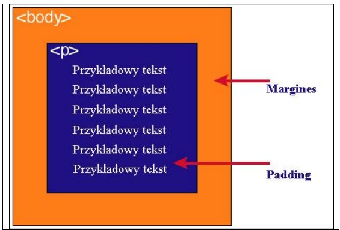

Definicja modelu pudełkowego: Każdy element w dokumencie HTML otacza się prostokątnym obszarem zwanym pudełkiem. Pudełko składa się z kilku warstw: zawartość, padding, border i margin.
| Zawartość | Opis |
|---|---|
| Content | Zawartość elementu (np. tekst, obrazek) |
| Padding | Otaczające marginesy wewnętrzne, odstęp między obramowaniem i zawartością elementu |
| Border | Obramowanie wokół zawartości elementu, ma styl i kolor |
| Margin | Marginesy wokół ramki (margines zewnętrzny). Jest to pusty obszar wokół ramki, który nie ma koloru tła i jest przeźroczysty. |
Uwaga 1: Padding, border i margin mogą mieć zerową wartość.
Uwaga 2: Tło elementu jest określone dla wszystkich z podanych powyżej obszarów z wyjątkiem marginesów zewnętrznych, które zawsze są przezroczyste (transparent).
Różnica pomiędzy paddingiem i marginesem polega na tym, że padding określa przestrzeń wokół danego elementu, natomiast margines określa przestrzeń pomiędzy elementami. Padding znajduje się wewnątrz elementu, podczas gdy margines znajduje się na zewnątrz elementu.
